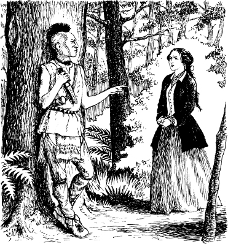

4
‘Tôi là tù trưởng của người Huron’
Người Huron và các tù binh của họ bắt đầu đi. Magua đi trước Duncan, Cora và Alice. Những người Huron còn lại đi sau tù binh. Họ đi ngang qua một thung lũng. Sau đó Magua dẫn họ lên một ngọn đồi dốc. Đất ở đỉnh đồi khá bằng phẳng. Magua ngồi xuống dưới một cái cây. Những người Huron bắt đầu ăn uống.
Magua gọi to Duncan. ‘Đưa người phụ nữ tóc đen lại đây cho ta!’
Cora rất sợ. Cô đến gần Magua. ‘Ngươi muốn gì?’ cô hỏi.
‘Ta là tù trưởng của người Huron,’ Magua nói. ‘Ta đã sống 20 mùa xuân và 20 mùa đông. Ta chưa từng gặp người da trắng. Ta rất vui! Nhưng rồi một người da trắng đã đến khu rừng này. Anh ta cho ta uống rượu mạnh. Loại đồ uống này rất tệ với ta. Nó khiến ta phát điên! Dân tộc ta rất tức giận. Ta buộc phải bỏ trốn. Ta đã bỏ trốn và sống cùng người Mohawk.’
‘Sau đó thì chiến tranh nổ ra,’ Magua nói. ‘Người Pháp và người Anh đang đánh nhau. Người Mohawk đánh nhau bên phe người Anh. Người Huron đánh nhau bên phe người Pháp. Ta đã phản bội lại dân tộc của mình.’
‘Cha ngươi – Munro – là tù trưởng của chúng ta. Ông ta đã nói với người Mohawk rằng, "Đừng uống rượu mạnh!" Nhưng một người da trắng đã cho ta uống rượu mạnh. Munro đã làm gì? Ông ta ra lệnh cho thuộc hạ của mình. Họ đã trói ta lại và đánh đập ta! Ta sẽ không bao giờ quên chuyện này!’
‘Nhưng mà—’ Cora nói.
‘Mụ đàn bà kia!’ Magua hét lớn. Anh ta nhanh chóng đứng bật dậy. ‘Mụ sẽ trở thành vợ ta! Em gái mụ sẽ đến Fort William Henry. Nó phải kể hết mọi chuyện cho Munro biết. Khi đó Munro sẽ hiểu. Con gái ông ta đang chung sống với ta – Magua.’
‘Không bao giờ!’ Cora nói. ‘Ta sẽ không trở thành vợ ngươi.’
Magua cười. ‘Vậy thì mụ sẽ phải chết,’ anh ta nói. ‘Và cả bạn bè của mụ nữa.’

Sau đó Magua đi về phía những người Huron khác. Anh ta nói chuyện với họ.
Duncan chạy đến chỗ Cora. ‘Chuyện gì vậy?’ anh ta hỏi. ‘Magua đã nói gì với em?’
‘Không quan trọng đâu,’ Cora nói.
Những người Huron đang lắng nghe Magua. Duncan quan sát họ. Họ rất tức giận. Bỗng nhiên, Magua hét lên với những người Huron. Họ kéo Duncan và những người phụ nữ vào trong đám cây. Họ trói từng tù nhân vào một cái cây bằng dây thừng.
Magua đứng trước mặt Cora. Anh ta cười lớn. ‘Con gái của Munro giờ nói thế nào?’ anh ta nói. ‘Ta có nên cho em gái mụ đi gặp cha mụ không? Mụ sẽ đi theo ta đến Đại Hồ và sống với ta chứ?’
Cora nhìn em gái mình.
‘Alice,’ Cora nói. ‘Ta phải đi với Magua và trở thành vợ anh ta. Khi đó em và Duncan sẽ được sống.’
‘Không!’ Duncan hét lên. ‘Không bao giờ!’
‘Không, không, không!’ Alice nói.
‘Vậy thì hãy chết!’ Magua hét lên.
Anh ta ném con dao của mình vào Alice. Con dao cắt đứt một phần tóc của cô. Nó cắm vào cái cây phía trên đầu cô. Duncan hét lên giận dữ.
Những người Huron đã trói Duncan vào một cái cây. Nhưng anh ta giật mạnh sợi dây và sợi dây đứt tung. Anh ta nhảy bổ vào một người Huron và họ đánh nhau. Người Huron kia có một con dao. Hắn định giết Duncan.
Bỗng nhiên một tiếng súng nổ và người Huron kia gục chết.

Mục lục
- Bìa sách
- Tiêu đề
- Nội dung
- Lời giới thiệu về Tác giả
- Lời giới thiệu về Câu chuyện
- Nhân vật trong Câu chuyện
- 1 Hai chị em
- 2 Lạc trong rừng
- 3 Cuộc chiến tại Glenn's Falls
- 4 ‘Tôi là một Tù trưởng da đỏ Huron’
- 5 Đồn Fort William Henry
- 6 ‘Khi nào viện binh đến’
- 7 Đường mòn
- 8 Người thày thuốc
- 9 Trong ngôi làng của người Hurons
- 10 Con gấu
- 11 Vị Tù trưởng già
- 12 Người Mohican cuối cùng
- Bản quyền